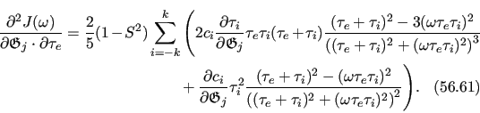

Next: Double pivoted motions Up: Frame order theory Previous: Frame order and the Contents Index
For the PCS, the lanthanide ion to nuclear vector is
| r = pN - pLn3+, | (12.53) |
where pN is the Cartesian coordinates of the nucleus of interest and pLn3+ is the position of the aligning lanthanide ion. r is defined in the alignment frame, and pLn3+ is constant in this frame. After a forward rotation to the discrete state i, the new atomic position in the reference frame is
| pN' = Ri⋅pN - pP |
(12.54) |
where pP is the pivot point of the rotation. Hence the transformed vector is
The set of three vectors are defining this pivoted system are
 |
Let the pre-rotation vectors be
 |
The post-rotation vectors are
 |
The vector rPN is independent of alignment so can be calculated once per atom, and rLP is independent of alignment and atom position so can be calculate once.
For a single state i, the PCS value when substituting 12.55b into 12.35 is
Expanding for the single motion of the lanthanide-atom vector rLN(1), this becomes
![\begin{subequations}\begin{align}\delta &= \frac{c}{\left\vert r_{\textrm{LN}}^{...
...0)^T} \cdot A \cdot r_{\textrm{LP}}^{(0)} \Bigg] . \end{align}\end{subequations}](img386.png) |
Due to the distance normalisation factor in these equations, the symbolic integration for the modelling of specific motional modes is currently intractable.
The relax user manual (PDF), created 2015-12-14.